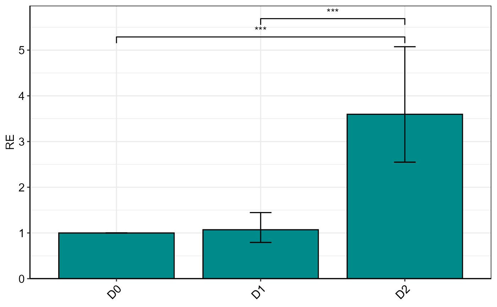

Bar plot of single gene expression (Delta Delta Ct method)
Source:R/plotSingleGene.R
plotSingleGene.RdCreates a bar plot of relative gene expression (fold change) values from single gene analysis
Usage
plotSingleGene(
res,
col_width = 0.8,
err_width = 0.15,
color = "black",
alpha = 1,
base_size = 12,
d = 0.4,
...
)Arguments
- res
An object created by the
ANOVA_DDCt()function- col_width
Numeric. Width of bars (default
0.8)- err_width
Numeric. Width of error bars (default
0.15)- color
Optional color for the bar outline
- alpha
Numeric. Transparency of bars (default
1)- base_size
Numeric. Base font size for theme (default
12)- d
Distance between horizontal significance lines
- ...
Additional ggplot2 layer arguments
Examples
res <- ANOVA_DDCt(
data_2factor,
numOfFactors = 2,
mainFactor.column = 2,
numberOfrefGenes = 1,
block = NULL,
analyseAllTarget = TRUE) # If you have multi-target gene data, specify a single target gene.
#>
#> Relative Expression
#> gene contrast ddCt RE log2FC LCL UCL se Lower.se.RE
#> 1 PO D0 0.00000 1.00000 0.00000 0.00000 0.00000 0.00000 1.00000
#> 2 PO D1 vs D0 -0.09833 1.07054 0.09833 0.70177 1.63308 0.43345 0.79272
#> 3 PO D2 vs D0 -1.84667 3.59668 1.84667 2.35774 5.48667 0.49655 2.54932
#> Upper.se.RE Lower.se.log2FC Upper.se.log2FC pvalue sig
#> 1 1.00000 0.00000 0.00000 1.0000
#> 2 1.44572 0.07281 0.13280 0.6744
#> 3 5.07434 1.30891 2.60535 0.0000 ***
#>
#> The D0 level was used as calibrator.
#> Note: Using default model for statistical analysis: wDCt ~ Drought * Genotype
plotSingleGene(res, fill = "cyan4", color = "black", base_size = 12)
